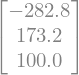
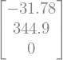
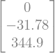
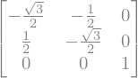
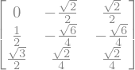
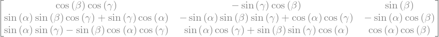

from moro import *
Rx = lambda x: rotx(x)
Ry = lambda x: roty(x)
Rz = lambda x: rotz(x)
{prob:cube_rot}#
En la Figura \ref{fig:cube_rot} se muestra un cuerpo rígido con forma de cubo y cuyas aristas miden 200 mm. Al sólido se le adhiere un sistema móvil \( \{1\} \) que inicialmente coincide con el sistema fijo \( \{0\} \) . Calcule lo siguiente:
a) Las coordenadas del punto \(Q\) después de una rotación de 30° alrededor del eje \(x_0\), seguida por una rotación de 225° alrededor del eje \(y_1\).
b) Las coordenadas del punto \(Q\) después de una rotación de 45° alrededor del eje \(y_1\), seguida por una rotación de 60° alrededor del eje \(z_0\).
c) Las coordenadas del punto \(Q\) después de la rotación de 135° alrededor del eje \(z_0\), seguida por una rotación de 90° alrededor del eje \(x_1\) y posteriormente una rotación de 60° alrededor del eje \(x_0\).
Q1 = Matrix([200,200,200])
# a)
R10 = Rx(pi/6) * Ry(225*pi/180)
(R10 * Q1).evalf(4)

# b)
R10 = Rz(pi/3) * Ry(pi/4)
(R10 * Q1).evalf(4)

# c)
R10 = Rx(pi/3)* Rz(135*pi/180) * Rx(pi/2)
(R10 * Q1).evalf(4)

{prob:three_systems}#
Suponga que tres sistemas de referencia {A}, {B} y {C} están dados y que además:
Calcule \(R_B^C\).
Sol:
RBA = Rx(pi/2) * Rz(pi/3)
RCA = Rz(-pi/2) * Ry(pi/2)
RBC = RCA.inv() * RBA
RBC

{prob:three_rotations_abc}#
La siguiente matriz de rotación corresponde a una secuencia de rotaciones alrededor de un sistema móvil:
Un ángulo \(\alpha\) alrededor del eje \(x\)
Un ángulo \(\beta\) alrededor del eje \(y\)
Un ángulo \(\gamma\) alrededor del eje \(z\)
Calcule \(\alpha\), \(\beta\) y \(\gamma\).
Rx(pi/3) * Ry(pi/4) * Rz(pi/2)

Rx(alpha) * Ry(beta) * Rz(gamma)
